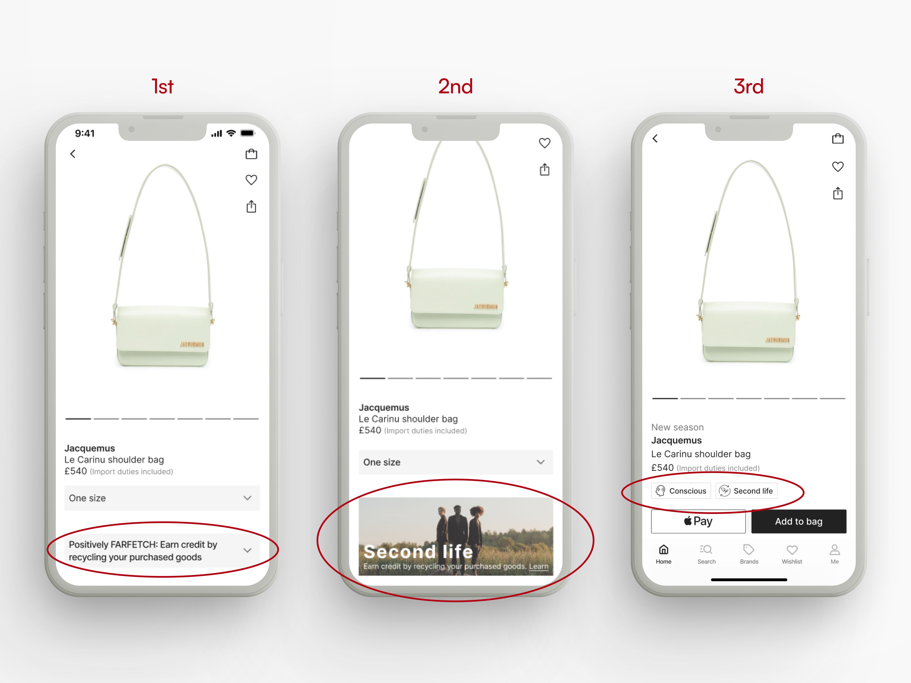

Farfetch
Designing the recycling option experience - UX/UI design
Where:
London
What:
Mobile app
Why:
Portfolio project
Role:
Designer, Researcher
Category:
E-commerce, Shopping
When:
Oct - Nov 2022
Problem:
We love clothes…but the global fashion industry is in big trouble - Sustainability is an urgent topic of action for the industry!
Goal:
1) Minimise the time spent on adding the recycling choice. It should not disturb its existing workflow.
2) Increase conversion rate through the recycling item scheme.
Design process:
I implemented design thinking to encourage positive behaviours on the environmental problem that the fashion industry holds.
*This case study is an unsolicited design project and part of the Design challenge from productdesign. tips.
Challenge:
How might we design checkout screens for an e-commerce app to help people recycle the goods they buy?
Empathize
During the empathise phase, I conducted a lit review and user interviews to get more insights into the topic: users, companies, and market landscape. It was essential to take all of the factors when proposing the experience.
üìà Trends and patterns
▫️ Consumers are keen to resale and purchase second-hand items that idea is becoming a norm.
▫️ 74% of consumers expect brands to act environmentally responsible.
üí° Themes
▫️ Recirculating clothes is up to 3.000% more efficient in their footprint reduction than reusing material.
üí• Conflicts
▫️ When purchasing new items, pricing and brand value are still strong shopping motivations for users.
☝️ Gaps and weaknesses
▫️ Large multi-brand e-retailers have much slower inventory turnover rates than reselling websites.
▫️ FARFETCH's Conscious collection sales grew 1.8 times faster than its average in 2021.
-The highlight of the user interview:
-Platform:
FARFETCH, a global online destination for luxury fashion with strong user engagement, is one of the few companies that emphasise the importance of sustainability out loud.
♻️ The Positively FARFETCH program.
üëú Their 3.6 million consumers focus on buying quality pieces with longevity.
üôã‚Äç‚ôÄÔ∏è The company see the demand for luxury pre-owned goods.
However, there is no integrated system to help users recycle the items they purchase on the platform.
For this reason, I pick them to find a way to encourage more sustainability on a fashion e-commerce platform for this case study.
Define
-Personas:
From the research findings, I was able to generate adhesive narratives for our key personas.
Ideate
Now, we are ready to generate ideas!
I made “How might we” questions to open up creative thinking for a better user experience design.
-Business / Competitive analysis:
Also, I analysed four direct and indirect competitors for their sustainability activities which gave me a deep understanding of the current market opportunities.
-Oportunities identified:
1. Room to grow in second-hand business
2. Most fashion e-com businesses heavily focus on selling new garments. As the statics showed, demand for resale is glowing; Vestiaire Collective have a much shorter age of stock online only 5% have listed for over a year. Whereas, a luxury e-competitor, 34% of products available have been online for over a year.
3. Introduce a new feature to users.
4. None of the competitors has recycling options in the checkout section. Users have a huge advantage of getting a FARFETCH credit for the easy recycling option. For the company, it is an efficient way to sufficient the second-hand item stocks from its users.
5. Becoming a true sustainability leader in the industry.
6. Some companies set and show sustainability goals only on corporate sites(often, do not share them on the product page or checkout).
7. Less business risk to start selling second-hand
8. Some reselling platforms have serious brand authentication problems. Integrating a new feature with the customer purchase history data will massively help this issue. Offering new and recycled items means that they can expand the product varieties and price range. It eventually attracts both luxury and new audiences to their business.
-User flow:
The checkout process is the focal point for all companies that generate profits. I created a recycling option user flow that should not disturb its existing workflow, especially at the checkout screen.
Prototype
-Rough wireframes:
Sketches of the early mockups. Taking the time to draft iterations of the app screens on paper ensured that all the elements that made it to the digital wireframes would be well-suited to the project goals.
-Mid-fidelity prototype:
Then, I made mid-fidelity wireframes using Figma. The screens are based on the sketch I designed and connected as a prototype for the usability test!
Test
-Usability study findings:
I conducted an unmonitored usability study that requested 5 users to perform tasks in a digital mockup.
☝️ Round 1 findings:
▫️ The recycling section at the checkout page annoyed users. It distracts from focusing on the purchase process.
▫️ The banner placement on the product pages was effective but users felt it was unobtrusive.
✌️ Round 2 findings:
▫️ The banner with a visual worked well to motivate users.
▫️ The second design took up a space which might disturb the shopping experience.
-Refine the design:
-Checkout screens flow:
⚠️ The first checkout design has another recycling page to confirm the service.
This extra flow at the checkout page annoyed users as it distracted them from focusing on the purchase process.
⚠️ For a better and more straightforward user experience, I made the checkbox component that includes a Learn more link for the service description page. The checkbox aligns with the promotional code section which eases the checkout flow. Users feel they have more control over the recycling feature.

-Banners vs Badges:
⚠️ The first banner tried to be subtle on the product page. Its placement on the pages was effective but users felt the design was unobtrusive.
⚠️ Instead, I changed to a visual banner-like component to attract users. This design motivated users and worked well. However, it looks like a marketing campaign that takes up more space which might disturb the shopping experience. The title changed from “Positively FARFETCH” to “Second life” which users can easily guess the nature of the service.
⚠️ Going deep to improve the design, I inspected the current app design again. I noticed a product title used either the New season or Conscious if the product is sustainable. These words provoke customer motivation high. However, both copies can't go together in one line due to space and business prioritisation which is a problem. I created badges for the sustainability category that works copies placement well altogether. Users love them because of their simplicity yet easy recognition with the icon. For a better and more inclusive user experience, the badge is clickable and connects to the FAQs page.
UX copy:
⚠️ Change the generic title to a motivational copy. Add the buzzword on the checkbox description - get credit- to trigger extra user attention. The second copy has more tone of company voice/character.
Final design
-Main features:
-High-fidelity designs:
The final high-fidelity prototype presented interactive user flows for the recycling option for smooth checkout.
View wireframesConclusion
Designing the business goals with UX strategy and the user's needs required great effort in this case study. Although users prefer a straightforward design for smooth checkout, even so, they demand all the beneficial info like discounts or credits on the page that push the shopping mood up. I had to carefully iterate a smooth and reliable shopping experience since the checkout process is a focal point for all companies that generate profits.
UX microcopy was also one of the key learning in this case study. I had to consider very short and effective UX microcopies with the tone of brand voice to align the company image/identity. Overall, users responded very positively to the recycling feature. They were motivated by the small icon badge that is eye-catching through the app which also helped the smooth checkout flow. As a result, 4 out of 5 test users desired to use the recycling service I designed.
References:
Continued™
LinkHypebeast
Can Resale Fix Fashion's
Sustainability Crisis?
Link
Cottonbro
Pexels
Model pictures